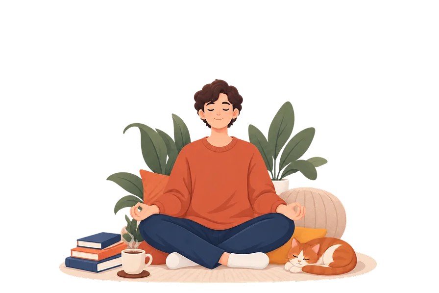
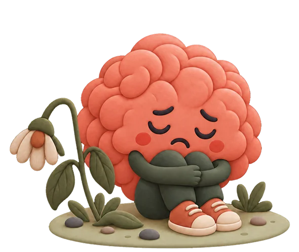

Psychologist
A psychologist helps people deal with mental health problems, stress, relationships, and life challenges. To use the title, you must complete a six year university degree in psychology and hold an official authorization from Helsedirektoratet, the Norwegian Directorate of Health. On psykolog.no you can find a psychologist in Norway online or in Oslo and ski and book consultation.
What Is A Psychologist?
A psychologist is a health professional to assess, understand, and treat mental health difficulties using psychological methods such as talk therapy, without prescribing medication. They use talk therapy and other methods to help people with mental health issues, stress, anxiety, depression, and more.
In Norway, the title "psykolog" is protected by law. That means only people who have completed a 6 year university degree in psychology can use it. To call yourself a psychologist in Norway, you must be authorized by Helsedirektoratet (the Norwegian Directorate of Health).
To become a psychologist, a person must complete a six year, full time professional degree in psychology at a Norwegian university. The program combines theory, research training, and supervised clinical practice with real patients.
PSYCHOLOGY v/s PSYCHOLOGIST
Psychology:
Psychology is the scientific study of how people think, feel, and behave.
Psychology:
Psychology is the scientific study of how people think, feel, and behave.
What Does A Psychologist Do?
A psychologist has many tasks. The main job is to listen, assess and help people improve their mental health and quality of life. Here is what a typical psychologist does.
You don't need to have a serious mental illness to see a psychologist. Many people see one for everyday problems like stress at work, relationship issues, grief, or feeling lost in life.


Talk therapy
The most common task. The psychologist talks with you, listens, and helps you understand yourself and your problems better. This can include CBT, DBT, psychodynamic therapy and more.
Depression & It's Symptoms
The Common Depression Symptoms
Depression affects both emotional and physical well being. Symptoms vary from person to person.
Common emotional symptoms include:


Diagnostic criteria (ICD-10)
To diagnose depression, at least two out of three core symptoms and a total of at least four symptoms must have been present for at least two weeks.
Do you need help now?
Psykolog.no helps you find a psychologist who suits your needs quickly and easily.
Find a psychologist →Early signs of Depression
Family members, friends, or colleagues may notice signs before the individual recognizes them. Here are the common signs of depression:


What Is The Severity Levels Of Depression?
There are several recognised forms, and they differ in intensity, duration, and trigger.

Mild depression
Often causes noticeable symptoms but does not prevent everyday functioning. It may be manageable with self help measures and psychological support.

Moderate depression
This affects daily life more significantly like concentration, work, and relationships are all impacted. Therapy is usually recommended, sometimes alongside medication.

Severe Depression
Severe depression causes intense emotional suffering and significant impairment. Individuals may struggle with basic daily activities such as getting out of bed, eating, or maintaining relationships.
What Can Cause Depression?
Depression does not have a single cause. Factors can be biological, psychological, and social, also known as the biopsychosocial model.

Biological factors
Genetics play a role; depression runs in families, though having a relative with depression does not mean you will develop it.
Brain chemistry is also involved: neurotransmitters such as serotonin, noradrenaline, and dopamine help regulate mood, and disruptions.
Hormonal changes, such as those during pregnancy, after childbirth, or during menopause can also be contributing factors.
Physical illness, chronic pain, thyroid problems, and sleep disorders all increase vulnerability.

Psychological factors
Personality traits such as perfectionism, low self-esteem, or a tendency to worry can increase the risk of depression.
Negative thinking patterns and cognitive distortions, such as catastrophising or black-and-white thinking, can maintain depressive episodes.
Childhood experiences, including trauma, neglect, or loss, can shape emotional regulation and increase vulnerability later in life.
Chronic stress and unresolved emotional conflicts can gradually wear down resilience and contribute to depression.

Social and environmental factors
Major life events such as divorce, job loss, financial difficulties, or bereavement can trigger depression.
Social isolation and loneliness, especially over extended periods, significantly increase the risk of developing depression.
Difficult working conditions, bullying, discrimination, or living in unsafe environments contribute to chronic stress and depression.
Substance use, including alcohol and drugs, can both contribute to and worsen depressive symptoms over time.
Are There Different Types of Depression
Depression is not a single condition. Several different forms exists. Common type of depression include.

Clinical Depression
Clinical depression involves significant symptoms that interfere with daily functioning. It is often what people mean when they use the term "depression."

Chronic Depression
Chronic depression, sometimes called persistent depressive disorder, involves depressive symptoms lasting two years or longer.

Recurrent Depression
Some people experience repeated episodes of depression throughout life, with periods of recovery between episodes.

Postpartum depression
Affects new mothers after having a baby, going beyond the "baby blues" that often follow birth. It is more common than many people know and is very treatable.
.webp)
Seasonal affective disorder (SAD)
Follows a seasonal pattern, most often appearing in autumn and winter. Light therapy and psychological treatment are both used.

Psychotic depression
It is a severe form where depression is accompanied by psychotic symptoms such as hallucinations or delusions. It requires specialised psychiatric treatment. Through our collaboration with Psykiater.no, you can be referred internally if you need psychiatric care.
Depression and Other Difficulties That Often Occur Together
Depression rarely occurs alone. Research found that between 15% and 44% of people with depression had also received an anxiety diagnosis and the co occurrence was found across Norway.

Depression and anxiety

Depression And Sleep Problems

Depression And ADHD

Depression And Stress Or Burnout

Other Important Consideration
Depression and anxiety
Anxiety and depression are the common conditions in mental health. Anxiety tends to push you toward worry about the future. However, depression tends to pull you toward hopelessness about the present. Many people live with both at the same time. Therapy approaches, particularly CBT, are effective for both.
See our anxiety page →Do you need an investigation?
Psykolog.no helps you find psychologists with special expertise in ADHD assessment and treatment of comorbid conditions.
How Is Depression Assessed?
Depression is not diagnosed through a blood test or a single questionnaire. However, it is assessed through a clinical conversation between you and a qualified health professional.
Depression is not diagnosed through a blood test or a single questionnaire. However, it is assessed through a clinical conversation between you and a qualified health professional.
A psychologist or doctor will ask about your symptoms. How long they have lasted, how intense they are , and how much they are affecting your daily life. They will also ask about your history and whether you have had depression before . This is called a clincal interview.
Questionnaire and screening tools may be used to help map the pattern and severity of symptoms. The formal diagnostic framework used in Norway is ICD-10. To meet the diagnostic criteria for depression , symptoms must be present for at least two weeks and must be causing meaningful disruption to daily life.

Ask Yourself These Questions About depression
These questions can help you get a clearer picture. They are not a diagnosis. Only a trained professional can give you that.
These questions are based on the i m depressed framework. The feelings have lasted more than two weeks; speaking with a psychologist is a sensible next step. A professional assessment for a depression test is the right next step.
REMEMBER
For moderate or severe depression, self-help alone is not enough. Always combine self-help measures with professional help from a psychologist or doctor.
Have I felt sad, empty, or numb for most of the past two weeks?
Have I lost interest in things I used to enjoy?
Do I feel worthless or like I do not matter?
Do I feel no energy or desire to do anything at all?
Do I feel like things will never get better?

Depression In Children And
Teenagers
Depression can occur in children and adolescents. Symptoms often look different from those in adults. Irritability may be more common than sadness. School refusal, withdrawal from friends, loss of interest in hobbies, sleep changes, and emotional outbursts can be signs of depression.
Parents should seek professional help if symptoms persist for more than two weeks andinterfere with daily functioning.
How Is Depression Treated By Psychologists?
For most people, psychological therapy is the recommended first approach, particularly for mild to moderate depression. Evidence based treatments are available, and the right choice depends on your individual situation.
Cognitive Behavioral Therapy for Depression
CBT for depression focuses on two things. It helps the person identify and challenge the negative self beliefs that fuel depression, such as "I am worthless" or "Nothing will ever improve."
Second, it uses a technique called "behavioral activation," which involves gradually increasing activity and engagement with life even when motivation is absent. Activity itself improves mood over time.
CBT helps you identify the patterns of thought that maintain depression such as persistent self criticism, hopelessness, or avoidance and works to change them through both conversation and practical exercises.

Behavioural Activation
When depression is present, people tend to withdraw from activity and the things that give them pleasure or a sense of achievement. This withdrawal makes the depression worse.
Behavioral activation is a structured approach that works by gradually reintroducing meaningful activities, even when motivation is low. It is closely related to CBT and is effective as a standalone treatment for mild to moderate depression.

Interpersonal Therapy (IPT)
IPT focuses on the relationship between mood and interpersonal problems like grief, role transitions, relationship conflicts, and social isolation.
It is particularly useful when depression has a clear social or relational context.

Medication for Depression
Antidepressants are the first line medication for moderate to severe depression. They take two to four weeks to start working fully. A psychiatrist will monitor the response and adjust the dose or switch medications if needed.
Medication is not a cure on its own. It works best when combined with therapy.

What Can You Do Yourself When You Are Depressed
Self-help is not a replacement for professional support when depression is moderate or severe. But for mild symptoms, or alongside therapy, there are things that help and they are not about trying harder or thinking more positively.


Do one small activity each day
Even when you do not feel like it. Doing things lifts mood over time.

Go outside for a short walk
Each day. Light and movement both improve mood.

Stay in contact
With at least one person, even just a short message.

Maintain a basic routine
For sleeping, eating, and waking up.

Be patient with yourself
For sleeping, eating, and waking up.
REMEMBER
For moderate or severe depression, self help alone is not enough. Always combine self help measures with professional help from a psychologist or doctor.
When Should You Seek Help?
Many people wait too long to seek help because they hope it will go away on its own. Here are clear signs of when you should contact a doctor or psychologist.

Symptoms for more than two weeks

Functioning poorly at work/school or at home

Withdrawn from friends and family

Sleeping much worse or much more than normal

Have had depression before

Self help and self care don't help
WHAT SHOULD I DO IF I HAVE THOUGHTS OF NOT WANTING TO LIVE?
Seek help immediately. Contact the mental health team or your GP. In case of acute danger to life, call 113.

Depression Treatment At Psykolog
At Psykolog.no we offer evidence-based assessment and treatment for depression. Our psychologists provide a safe and supportive environment where you can understand the underlying causes and provide practical strategies for recovery.
Whether you are experiencing mild depressive symptoms, chronic depression, recurrent depression, or depression alongside ADHD or anxiety, we can help you find the support that fits your needs.
Questions & Answers
Still unsure whether speaking to a psychologist is the right next step? Book a first conversation.
These are the questions people ask us most often before booking their first consultation.
Mental health is about how you feel about yourself, how you cope with everyday challenges, and how you function in relationships and work. Good mental health is not the absence of difficult emotions. However, it is the ability to manage them.
Ready To Take First Step
It is courage to seek help, not weakness. Psykolog.no helps you find a qualified psychologist with experience in treating depression.
Book an appointment